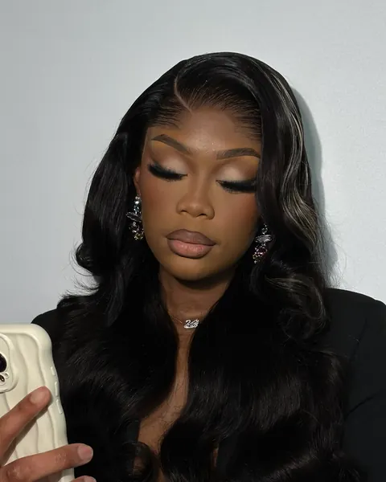
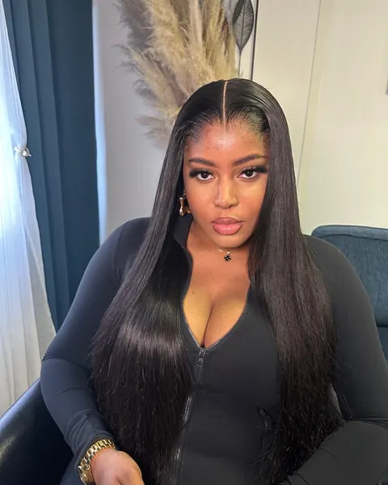

Nattes sous perruque
20 €
1 h
Vos cheveux nattés à plat pour une base fine et régulière : la perruque tombe mieux et vos cheveux sont protégés dessous.
RéserverCoiffeuse diplôméePrestation
Les finitions qui changent tout : une base de nattes plate pour une pose impeccable, et un brushing pour redonner forme et mouvement à vos cheveux ou à votre perruque.


Tarifs
Tarifs et durées indicatives. Un acompte de 30 % confirme la réservation.
La base
01
Des nattes fines et régulières donnent une surface lisse : la perruque se pose à plat, sans bosse ni relief.
02
Bien maintenue, la perruque suit la forme de votre tête et la lace se fond mieux sur la ligne frontale.
03
Rassemblés et nattés, vos cheveux naturels sont à l'abri des frottements le temps de la pose.
Brushing & styling
Le brushing & styling redonne forme à vos cheveux ou à votre perruque. Choisissez une allure pour la voir prendre forme.
Le déroulé
Vos cheveux sont démêlés soigneusement, des pointes vers les racines.
Des raies nettes et régulières dessinent le schéma des nattes.
Nattes plaquées, fines et à plat, avec une tension maîtrisée.
La base est plate et propre : la perruque peut se poser.
FAQ
Une base de nattes plates est recommandée pour que la perruque se pose bien à plat et que vos cheveux soient protégés. Si vos cheveux ne sont pas déjà nattés, ajoutez cette prestation (20 €, 1 h) à votre rendez-vous.
Oui : le brushing & styling (40 €, 1 h) redonne forme à une perruque comme à vos cheveux : lissage, ondulations ou boucles.
Oui, sélectionnez plusieurs prestations dans le formulaire de réservation : le total et la durée se calculent automatiquement.
Découvrir aussi
Choisissez votre prestation, indiquez la date souhaitée : votre demande part en un geste sur WhatsApp ou par SMS.